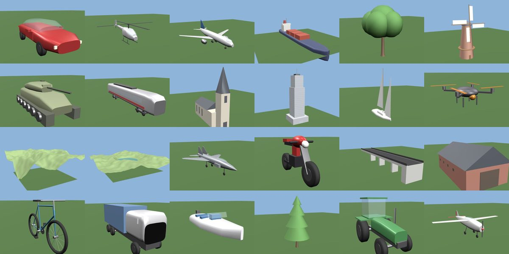

MCP server + CLI for Godot 4.7
Make any coding agent fluent in Godot 4.
Claude Code, Codex and other agents write Godot 3 code, invent methods and miss broken node paths. Godotwright gives them the real Godot 4.7 API, a map of your project, headless checks and an AAA review, offline and MIT licensed.

Real output of godotwright review on test/fixtures/messy, a sample project with a Godot 3 script left in. Long lines trimmed.
Install
One command, no clone: npx runs it straight from npm. Needs Node.js 22.12 or newer. scan, api and review need no Godot install; check runs Godot 4.7 headless.
npx -y godotwright review ~/games/my-gamenpx -y godotwright scan ~/games/my-gameclaude mcp add godotwright -- npx -y godotwright mcp --tier premiumcodex mcp add godotwright -- npx -y godotwright mcp --tier premiumRun the agent from your Godot project folder, or pass --project <path>. Use --tier cheap for small models: shorter output and step-by-step instructions.
Godot 3 habits, caught before Godot sees them
Models trained on years of Godot 3 tutorials still write yield, export var and KinematicBody2D. The review names every line and gives the Godot 4 fix.
1extends KinematicBody2D 2 3export var speed = 200 4onready var sprite = $Sprite … 11 yield(get_tree().create_timer(1.0), "timeout") … 17 velocity_old = move_and_slide(velocity_old, Vector2.UP) 18 rotation = deg2rad(90) 19 var t = OS.get_ticks_msec()
- :1error Cannot extend "KinematicBody2D". In Godot 4 it is CharacterBody2D.
- :3error
export varis @export var in Godot 4. - :4error
onready varis @onready var in Godot 4. - :11error
yield()is await in Godot 4. - :17error move_and_slide() takes 0 arguments, but 2 are given. Set velocity and call it without arguments.
- :18error deg2rad() is deg_to_rad in Godot 4.
- :19error OS.get_ticks_msec() moved: use Time.get_ticks_msec().
Seven MCP tools, one CLI
Each tool is also a CLI command, so it works from any shell or agent. Output is compact and stable, so it is cheap for a model to read.
- godot_scan
Map the project without starting Godot: scenes and node trees, scripts with signals and exports, autoloads, input map, broken references.
godotwright scan - godot_api
Exact Godot 4.7 lookup from the bundled class reference (1078 classes): signatures, inheritance, Godot 3 names.
godotwright api Node2D.look_at - godot_api_search
Search the reference in plain words, so the agent finds
is_on_floor()instead of guessing.godotwright api --search "is on floor" - godot_review
AAA review with a 0–100 score for api, performance, quality and structure. Also reviews unsaved code before the agent writes it.
godotwright review --min-score 90 - godot_check
Run Godot headless: import, load and instantiate every script and scene, optionally run the main scene. Errors come back as
file:line.godotwright check --run - godot_checklist
Every AAA rule with its fix, so the agent knows the bar before it starts.
godotwright mcp - godot_feedback
Mark a finding as wrong or right. Later reviews on this machine learn from it.
godotwright learn feedback - Mods and patches
Review a mod against the game it patches, from its source folder or a
.pckfile list.godotwright review mod/ --base game/ - Local learning
Rules real Godot keeps contradicting turn into hints. Nothing leaves your machine unless you opt in.
godotwright learn
It builds 3D models too
Agents can make, look at and check 3D models for Godot without Blender. model identify says what a thing is (parts, sizes, pivots), model build makes a clean .glb from one of 44 ready-made kinds or your own JSON spec, model view draws it as text for agents that cannot see pictures, and model lint scores it and checks it is what it should be. It is set up to work with small, cheap models as well (what we tested).

Measured, with the limits stated
168 runs of Claude Haiku, Sonnet and Opus on 12 Godot tasks, each with and without Godotwright, judged by real Godot 4.7.2 behavior tests in CI. Every run passed in both modes, so these tasks do not separate the setups on correctness. Code quality did differ.
How it compares
| Godotwright | Agent on its own | Godot editor | |
|---|---|---|---|
| Godot 4.7 API, offline | Bundled class reference | From training data | Built in |
| Flags Godot 3 code with the fix | Yes | Sometimes | Parse errors only |
| Usable by the agent itself | MCP + CLI | n/a | Needs a human |
| Performance and structure review | Scored per category | No | Warnings only |
| Needs Godot installed | Only for check | No | Yes |
| Does not | Write your game, replace playtesting, or review C# code | Run Godot | Talk to agents |
FAQ
Does it need Godot installed?
No for scan, api and review: they read your project files and the bundled Godot 4.7 class reference. Only check runs Godot 4.7 headless (--godot <path>, $GODOT, godot on your PATH, or a Godot 4 download it finds in the usual folders, Steam or Downloads).
Which agents does it work with?
Any agent that speaks MCP over stdio. CI connects Claude Code and Codex to the server on every push. The CLI works from any shell, so agents without MCP can call it too.
Does it send my code anywhere?
No. Learning stays on your machine and stores counters, rule names and API names, never code, names or paths. Sharing anonymous counters is opt-in, off by default, and respects DO_NOT_TRACK. See PRIVACY.md.
Will it help me port a Godot 3 project?
Yes. The review flags Godot 3 syntax and names such as export var, yield, KinematicBody2D, deg2rad and move_and_slide() with arguments, and gives the Godot 4 replacement for each.
Does it work with Godot 4.0–4.6?
The target is Godot 4.7.x. Most findings apply to every Godot 4 version, but API lookups answer for 4.7, so a method added after your version may be reported as present.
Is it on npm?
Yes: godotwright. npx -y godotwright runs the latest version, or install it with npm install -g godotwright.